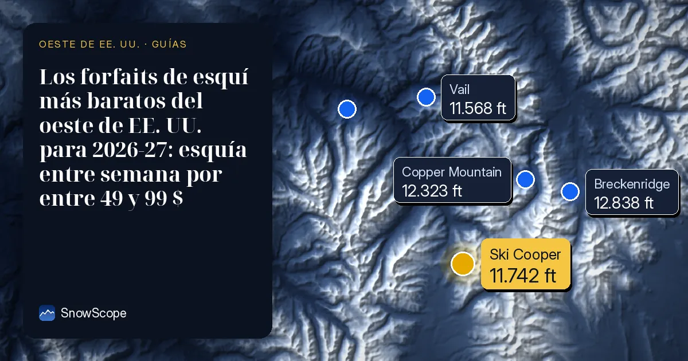

Los forfaits de esquí más baratos del oeste de EE. UU. para 2026-27: esquía entre semana por entre 49 y 99 $
Este invierno todavía puedes esquiar en el Oeste americano por menos de 50 $ al día. Ski Cooper, en Colorado, cobra 49 $ a los adultos entre semana, el mismo precio que el año pasado. El truco en toda la lista es el mismo: esquía de lunes a jueves, compra online y elige una estación pequeña e independiente con un buen historial de nieve.
Consulta la previsión de nieve en tiempo real de Ski Cooper en la app SnowScopeEspesor de nieve, alertas de nieve polvo y mapa 3D, gratis.
Siete forfaits baratos, de menor a mayor precio
Ski Cooper, cerca de Leadville, cuesta 49 $ entre semana y 99 $ los fines de semana y festivos. Loveland vende su forfait de temporada baja por 60 $ online, hasta el 13 de diciembre de 2026, frente a los 119 $ en taquilla. Lookout Pass, en el límite entre Idaho y Montana, cuesta 63 $ entre semana si reservas con antelación y 75 $ los fines de semana.
White Pass, en Washington, parte de 69 $ en días de temporada baja y 89 $ en días de temporada alta, tanto online como con precio dinámico. Beaver Mountain, en Utah, mantiene un precio único, 75 $, sin recargo en días de temporada alta. Montana Snowbowl, sobre Missoula, cuesta 78 $ entre semana y 85 $ los fines de semana. Mt. Baker, la estación con más nieve de la lista, cuesta 98,8 $ en días de temporada baja y 115,42 $ en días de temporada alta, sin impuestos.
La nieve que hay detrás del precio
Hemos revisado la cota media en nuestro histórico de nieve de 46 inviernos pasados. Mt. Baker suele tener 47 in (119 cm) en diciembre y 24 semanas de invierno con al menos 20 in (50 cm) en 9 de cada 10 inviernos, lo mejor del grupo. White Pass tiene 41 in (104 cm) y 20 semanas así, Lookout Pass 32 in (81 cm) y 17 semanas, Montana Snowbowl 31 in (80 cm) y 18 semanas.
En Colorado, Loveland suele mantener 29 in (73 cm) en diciembre con 19 semanas de nieve garantizada, y Ski Cooper 26 in (65 cm) con 18. Beaver Mountain tiene el diciembre más flojo de la lista, 22 in (57 cm), y 15 semanas. Todas las estaciones de aquí acumulan mucha más nieve en enero, así que una escapada entre semana en enero es el mejor chollo de todos.
Nuestras recomendaciones
La más barata en general: Ski Cooper un día de diario, 49 $, con una nieve que suele ser fiable gracias a su alta cota base de 10584 ft (3226 m). Mejor nieve por el precio: White Pass desde 69 $ en temporada baja, o Mt. Baker si no te importa pagar más por la nieve de diciembre más abundante de nuestra lista.
La mejor para una ruta por Colorado: el forfait de temporada baja de Loveland a 60 $ antes del 13 de diciembre de 2026, a una hora de Denver, con remontes que llegan hasta los 12684 ft (3866 m). Beaver Mountain es la opción familiar: un precio único todos los días, sin sorpresas.
Cómo conseguir el precio bajo
La mayoría de estos precios son tarifas de entre semana, de temporada baja o de compra online. Compra antes de salir de viaje: los precios de taquilla son más altos en Loveland y Lookout Pass, y los precios dinámicos de White Pass suben a medida que se venden los días. Evita los festivos, cuando no se aplican las tarifas bajas.
Los impuestos y las tasas pueden añadir unos dólares más al pagar, y Mt. Baker muestra sus precios sin impuestos. Consulta la web de la estación la semana en que vayas.
Los forfaits de temporada, como el Indy Pass, pueden salir más a cuenta que los forfaits de día si esquías muchos días, pero para uno o dos viajes entre semana al año, estos precios de taquilla y online suelen ser la opción más barata. Compara ambas opciones antes de decidirte, y recuerda que un forfait barato en una estación pequeña suele venir con aparcamiento gratis y pocas colas en los remontes.
Dónde alojarse con presupuesto ajustado
Los pueblos de esquí pequeños y los moteles del valle abaratan el viaje: Leadville para Ski Cooper, Georgetown para Loveland, Wallace para Lookout Pass, Packwood para White Pass y Glacier para Mt. Baker. El mapa de este artículo muestra alojamientos por debajo de 150 $ la noche para un viaje entre semana del 7 al 10 de diciembre de 2026.
Los puertos de montaña en invierno pueden cerrarse por temporales. Lleva cadenas o neumáticos de nieve y consulta el estado de las carreteras y el parte de aludes antes de salir.
Consejos para esquiadores
- La más barata: Ski Cooper, 49 $ entre semana.
- Más nieve por el precio: White Pass desde 69 $ en temporada baja, 41 in (104 cm) en un diciembre normal.
- Chollo en Colorado: Loveland, 60 $ online hasta el 13 de diciembre de 2026.
- Esquía de lunes a jueves y compra online antes de salir de viaje.
Más mapas (sitios externos)
Referencias y créditos
- Ski Cooper, day pass 2026-27 (official) www.skicooper.com/cooper-day-pass/
- Loveland Ski Area, lift tickets 2026-27 (official) skiloveland.com/lift-tickets/
- Lookout Pass, lift tickets 2026-2027 (official) skilookout.com/lift-tickets/
- White Pass, online day tickets 2026/27 (official) skiwhitepass.com/online-day-ticket-sales
- Beaver Mountain, tickets and passes 2026-2027 (official) www.skithebeav.com/tickets-and-passes/
- Montana Snowbowl, lift tickets 2026/27 (official) montanasnowbowl.com/sbblog/lift-tickets/
- Mt. Baker Ski Area, daily lift tickets (official) www.mtbaker.us/tickets-and-passes/daily-lift-tickets/
Sobre estas cifras
Cifras de nieve: histórico de nieve de SnowScope, 46 inviernos pasados (1980-81 a 2025-26) a tres alturas de la estación, un modelo del pasado corregido por altitud (una estimación para una zona, no partes de la estación). Remontes, pistas y acceso: las fuentes de abajo, comprobadas en la fecha indicada.
Citar este informe
Para investigación, docencia o prensa: cifras y gráficos reutilizables libremente bajo CC BY 4.0 con esta cita.
SnowScope (2026), Los forfaits de esquí más baratos del oeste de EE. UU. para 2026-27: esquía entre semana por entre 49 y 99 $, https://snowscope.app/blog/es/2026/11/cheapest-lift-tickets-us-west-2026-27-weekday-deals.html, consultado el 2026-11-19
SnowScope (Atlas Labs). (2026, November 19). Los forfaits de esquí más baratos del oeste de EE. UU. para 2026-27: esquía entre semana por entre 49 y 99 $. SnowScope snow reports. https://snowscope.app/blog/es/2026/11/cheapest-lift-tickets-us-west-2026-27-weekday-deals.html
BibTeX
@misc{snowscope2026cheapestliftticketsuswes,
author = {{SnowScope (Atlas Labs)}},
title = {Los forfaits de esquí más baratos del oeste de EE. UU. para 2026-27: esquía entre semana por entre 49 y 99 $},
year = {2026},
month = nov,
howpublished = {\url{https://snowscope.app/blog/es/2026/11/cheapest-lift-tickets-us-west-2026-27-weekday-deals.html}},
note = {Published 2026-11-19 17:16 UTC; accessed 2026-11-19}
}· CC BY 4.0 · Métodos, datos y herramientas →
Ski Cooper: nieve y temperatura según la altura, este invierno vs el pasado (herramientas) →
Sigue Ski Cooper
Gratis: un aviso cuando llega la nieve y la previsión cada mañana.